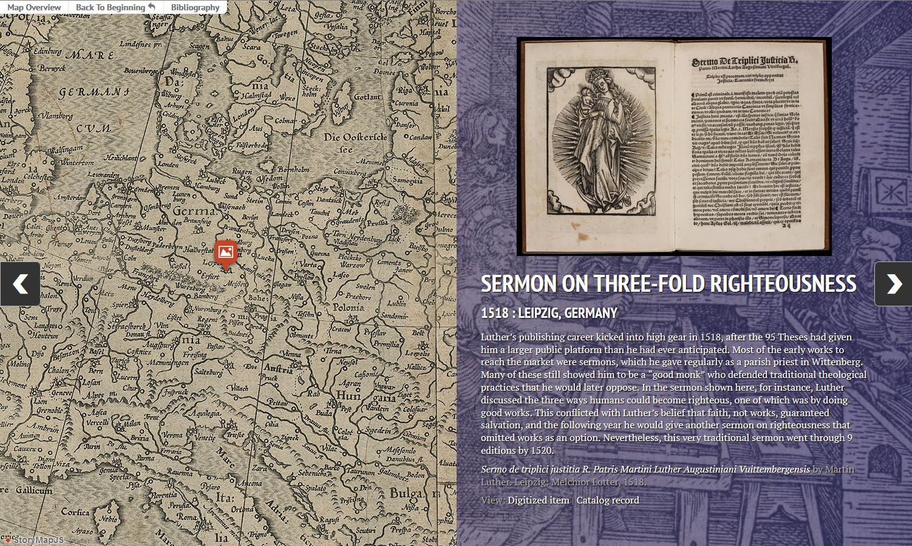

Tracking the Luther Controversy
The public career of Martin Luther (1483-1546) started with a bang. In 1517, the monk and professor in the small town of Wittenberg circulated a list of 95 academic theses criticizing the sale of papal indulgences and other practices in the Roman Church. He hoped this would lead to an academic debate on these issues at his university, so he had his theses printed at Wittenberg’s only printing shop and sent them to friends and colleagues to drum up interest.
That proved to be a fateful decision. Quite unbeknownst to Luther, his theses were soon reprinted and shared throughout Germany and beyond, bringing his name and his ideas before a European audience practically overnight. It soon became clear that he would get his debate, but not at Wittenberg. Thanks to print, the controversy between Luther and the papacy had stepped onto an international stage through an array of publications.
This resource will give you a sense of the experience of what contemporaries called the “Luther Affair” (causa Lutheri). Through items from the collection at the Newberry Library, you will see Luther and his Catholic opponents in action, using the printing press to share their vision of Christianity with a public that hung on their every word. It was not a calm exchange. The works included here show Luther and his critics developing their theologies on the fly, deflecting attacks with vicious insults as often as reasoned arguments, and continuously looking for new ways to use print to win the public relations war in which they were engaged.
This was a war that Luther was ultimately to win, thanks to his intuitive command of the medium of print and its ability to reach and convince a large number of people in the shortest amount of time. He developed new genres, adopted a more popular writing style, and incorporated images and page layouts in ways that his Catholic opponents were slower to adopt. In so doing, Luther remade print just as profoundly as print had remade him. This map will provide a clear view of how printing allowed an obscure monk to become the most famous man in Europe and start a religious and media revolution that forever altered world history.
Click the image below to view the map resource.

Comments